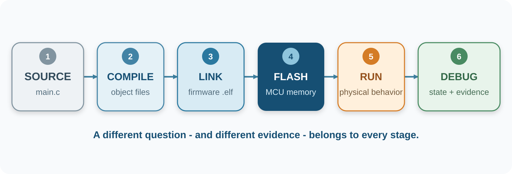
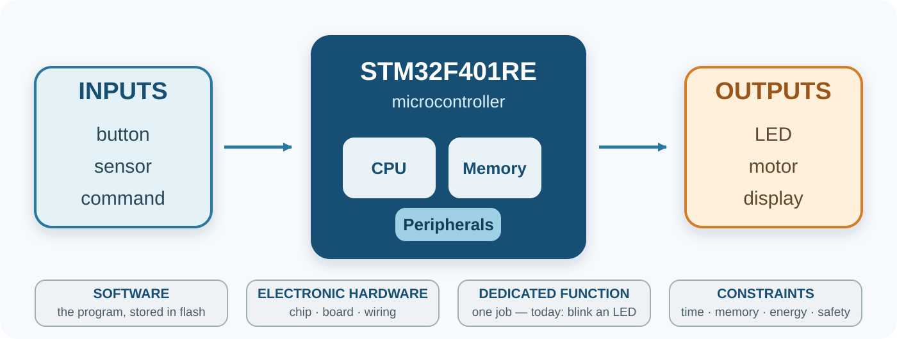
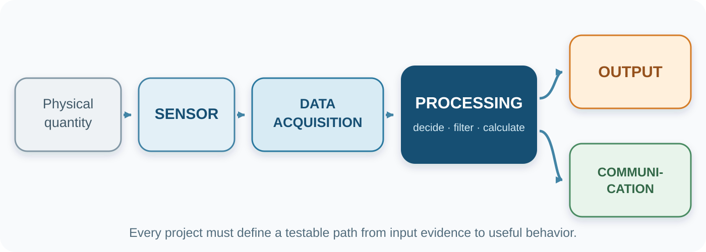
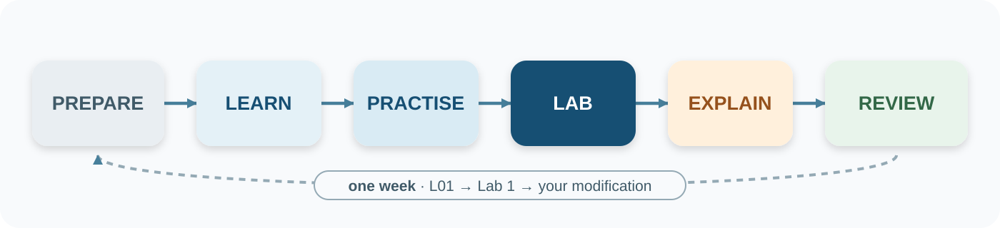
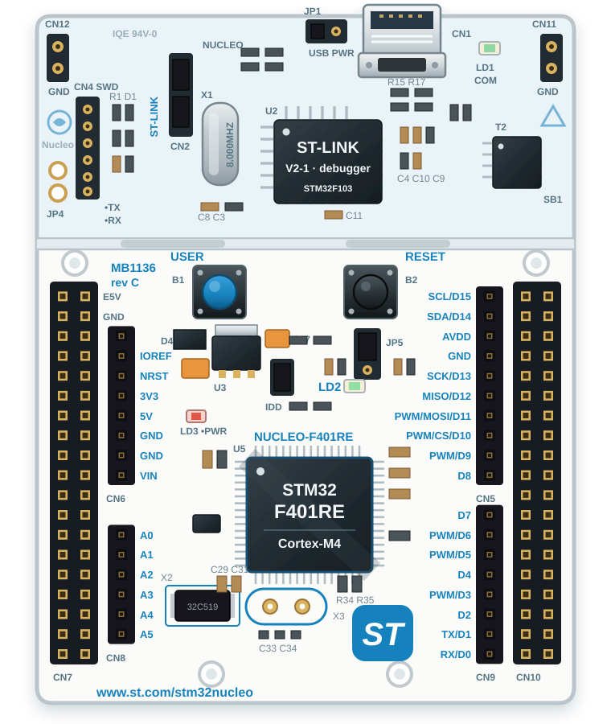
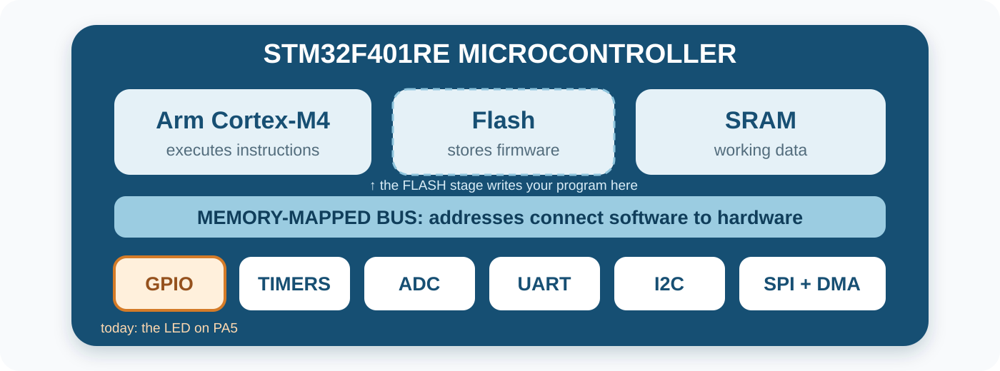
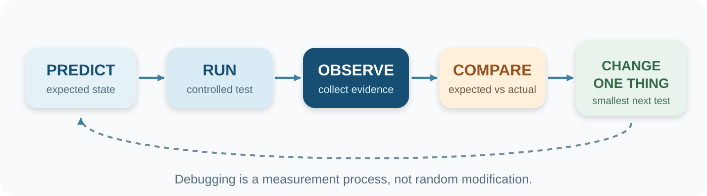
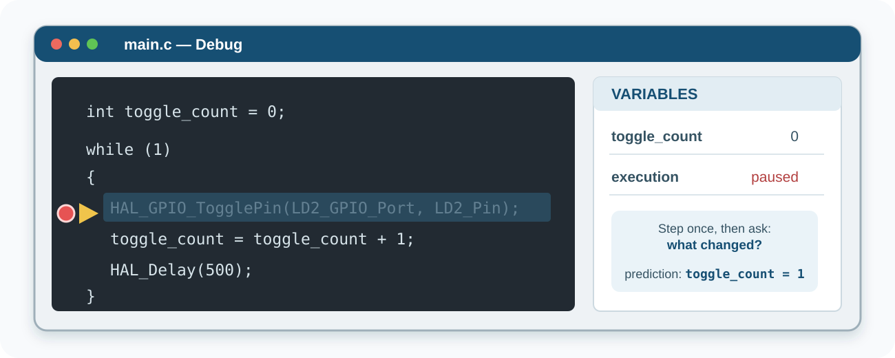

L01 - Embedded Systems, the C Toolchain, and Debugging
How does a line of C code become a physical change on a circuit board?
By the end of today, you will be able to trace the complete path from source code to physical evidence.


An embedded system combines:
Washing-machine controller
Dedicated function? Constraints?
Laptop
Dedicated function? Constraints?
Digital thermostat
Dedicated function? Constraints?
Car braking controller
Dedicated function? Constraints?
Note
The boundary is not always absolute. Your justification matters more than the label.
PROCESSOR
Executes instructions
a computing core
MICROCONTROLLER
Processor + memory + peripherals
integrated on one chip
EMBEDDED SYSTEM
Hardware + software + purpose
the complete product
Our Nucleo board carries an STM32F401RE microcontroller, whose processor is an Arm Cortex-M4 core.
01 Write & debug Embedded C
02 Model Cortex-M hardware
03 Control peripherals
04 Design responsive applications
05 Integrate & defend a system
The goal is not register-name memorization. The goal is evidence-based engineering.
A successful project has a testable chain:

Environmental monitor · Reaction-time game · Smart controller · Motion alarm · Sensor logger
L01
Notice possibilities
L03–04
Generate + scope
L05
Team + launch
L06–12
Prove subsystems
L13–14
Integrate + defend
Today, simply notice possible inputs, processing, and outputs.
Embedded C Foundation
Hardware foundations
Peripherals and integration
Every lecture follows the same cycle:

| Stage | Support level |
|---|---|
| L01-L02 | Detailed workflow and frequent checkpoints |
| L03-L05 | Partial code and meaningful TODOs |
| L06-L08 | Requirements, references, and acceptance tests |
| L09-L12 | Specification-driven implementation |
| L13-L14 | Integration, testing, and defense |
The instructions fade; your engineering responsibility grows.
Proposed 2026-2027 baseline:
| Category | Weight | Main evidence |
|---|---|---|
| Midterm | 25% | Written reasoning + individual practical |
| Project | 20% | Milestones + system + individual defense |
| Laboratory | 25% | Direct checkoffs + preparation/homework |
| Final | 30% | Applied written assessment |
Final publication is subject to institutional reconciliation.
01 C requires us to state what kind of value a variable stores.
02 C statements end with a semicolon.
03 The compiler translates these statements into machine instructions.
We will build these foundations during the first four lectures.
main()01 Execution enters the program at main().
02 The braces contain the statements that belong to main().
03 The statements execute from top to bottom.
01 int means the variable stores a whole number.
02 temperature is the name used by later statements.
03 24 is the first stored value.
04 ; ends the declaration.
Read the second statement from right to left:
count;count.After both statements, count is 1.
if statementThe program asks whether temperature > 22. If the answer is true, it stores 1 in fan_on. Otherwise, it skips the statement inside the braces.
while (1) means repeat forever. Firmware normally initializes the hardware once and then stays inside an infinite main loop.
fan_on after execution?temperature is 18?Each stage produces different kinds of errors and evidence.
| Tool | Job | Evidence |
|---|---|---|
| Editor | Create source files | Readable C source |
| Compiler | Translate C to object code | Errors, warnings, .o files |
| Linker | Combine objects and libraries | Memory map, .elf file |
| Programmer | Write firmware to flash | Successful download |
| Debugger | Control and inspect execution | Breakpoints, variables, registers |
Our toolchain packages these tools: STM32CubeMX configures and generates, VS Code edits and debugs, and the STM32CubeCLT toolbox supplies the compiler, linker, and programmer underneath.
The full story behind this table—what each tool consumes and produces, from keypress to blinking LED: From C to Silicon, the toolchain companion.

USB
power + data
ST-LINK
program + debug
B1 · PC13
user button
LD2 · PA5
user LED
STM32F401RE
target MCU
HEADERS
Arduino + Morpho
In the lab, locate each physical item before writing code.

Peripherals are hardware blocks controlled by configuration and data registers.
Deep dive: PM0214 Rev 10, §2.1 Programmers model — p. 17.
Registers explain the machine
Clocks · bit fields · flags · cause and effect
HAL helps build systems
Readable operations · generated setup · manageable complexity
Our sequence: working HAL → C foundations → direct GPIO → informed abstraction choices
Interpretation:
Later, timers and interrupts will replace this blocking delay.
The generator protects marked regions:
/* USER CODE BEGIN 2 */
/* Your initialization additions */
/* USER CODE END 2 */
while (1)
{
/* USER CODE BEGIN 3 */
/* Your repeated application code */
/* USER CODE END 3 */
}Code outside user regions may be regenerated from the .ioc configuration.
| Claim | What it proves | What it does not prove |
|---|---|---|
| Build succeeds | Source compiles and links | Hardware behaves correctly |
| Flash succeeds | Firmware reached the MCU | The logic is correct |
| LED blinks | One observable requirement works | Every requirement works |
Engineering conclusions must match the evidence available.
1 · COMPILE
Can each source file be translated?
Syntax · types · names · warnings
2 · LINK
Can all pieces form one program?
Missing symbols · duplicates · memory
3 · RUN / HARDWARE
Does the real system behave correctly?
Logic · clocks · pins · wiring · power

Change one thing, then repeat the cycle with new evidence.
1 EXPECTED
What should happen?
2 OBSERVED
What actually happened?
3 EVIDENCE
What did you measure?
4 NEXT TEST
What is the smallest check?
“It does not work” contains none of these.

Pause → inspect state → compare with prediction → step → observe again
→
one change
What stays fixed? What changes? Which physical observation would confirm it?
| Symptom | First checks |
|---|---|
| Board is not detected | USB data cable, ST-LINK connector, driver, power LED |
| Build fails | First error, not the last; file saved; braces and semicolons |
| Flash fails | ST-LINK connected; no other debug session holding it |
| LED does not blink | Correct board, PA5/LD2 configuration, code in user region |
| Change has no effect | Rebuild and flash the new binary; confirm the edited project |
Collect evidence before changing multiple settings.
PROGRAM FLOW
Variables · if · loops · functions
REPRESENTATION
Tracing · binary · hexadecimal
TOOL CONFIDENCE
Edit · build · interpret feedback
It is an early-warning tool, not a punishment. Results route students to the Embedded C recovery track.
1 Microcontroller vs processor?
2 Compiler output used by linker?
3 What does a successful build prove?
4 Why debug a working program?
5 What programs and debugs the MCU?
Discuss, then revise one answer.
✓ Distinguish processor, MCU, and embedded system
✓ Trace source → build → flash → execution
✓ Identify the four toolchain roles
✓ Read main(), a variable declaration, and an assignment
✓ Trace a simple if and while (1)
✓ State useful debugging evidence
A ORIENT
Board + tools
B PROVE
Build + flash
C OBSERVE
Breakpoint + variable
D OWN
Modify + justify
Bring the completed pre-lab entry ticket.
EVIDENCE
What observation proves new firmware reached the board?
PREDICTION
What changes when 500 becomes 100?
QUESTION
Which part of today’s workflow remains least clear?
Next: arithmetic, comparisons, decisions, loops, and arrays.
Every concept in this lecture, with page-linked sources: academic references.
EE5203 - L01